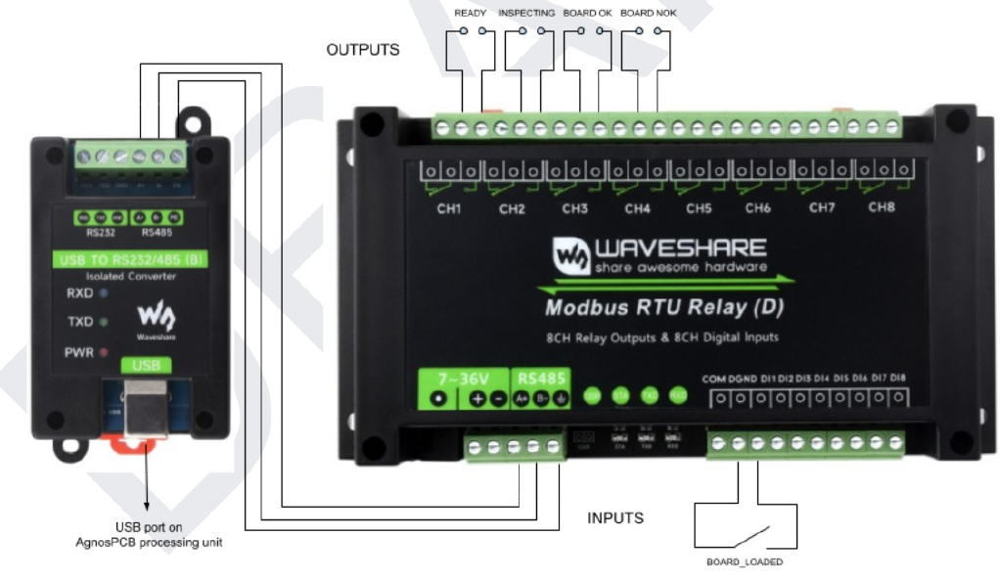
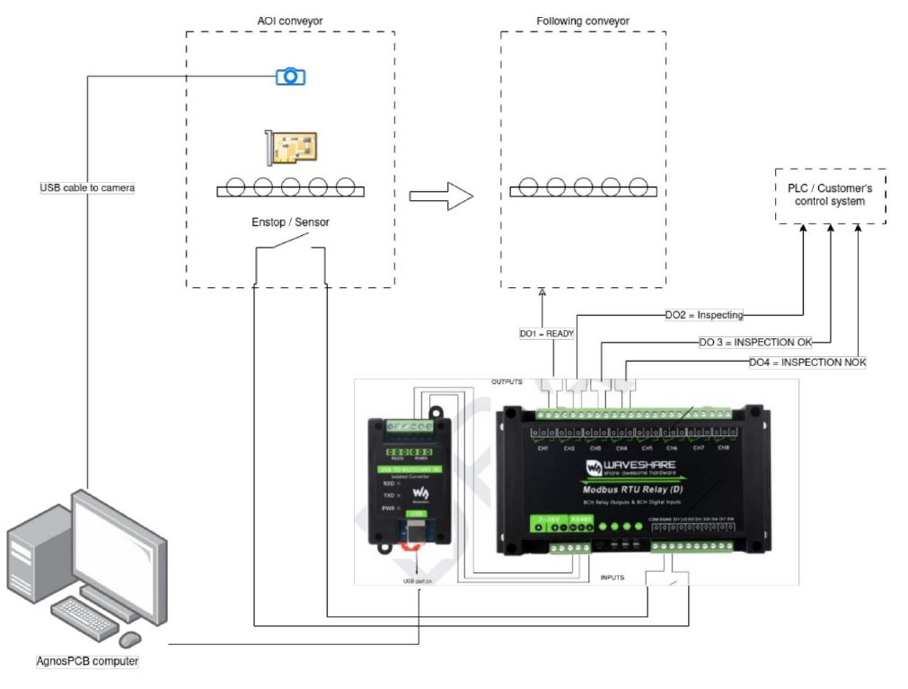
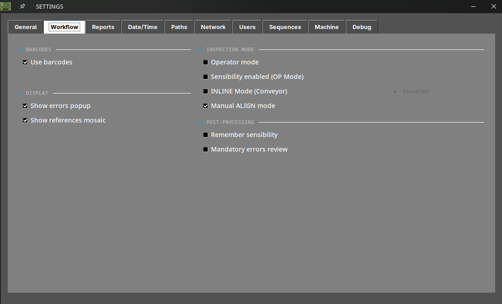

Intégration en ligne de production (mode INLINE)
Ce guide explique comment intégrer l'AgnosPCB AI 4050 dans une ligne de production automatisée, afin que l'AOI reçoive les cartes depuis un convoyeur, les inspecte sans intervention de l'opérateur et renvoie un résultat PASS/FAIL au contrôleur de ligne.
L'intégration comporte deux parties :
- Le module MODBUS, qui relie l'AOI au convoyeur et au contrôleur de ligne (automate, PLC).
- Le mode INLINE du logiciel d'inspection, qui pilote le fonctionnement autonome.
À lire avant de commencer
L'intégration en ligne implique des travaux électriques à la fois sur l'AOI et sur le contrôleur du convoyeur. Tout le câblage doit être effectué avec les deux systèmes hors tension, et par un personnel qualifié pour intervenir sur l'armoire de commande de la ligne.
Avant de commencer
Vérifiez que vous disposez des éléments suivants :
- Une unité AI 4050 déjà déballée, assemblée et fonctionnant en mode autonome. Si vous n'en êtes pas encore là, terminez d'abord le guide de déballage et le guide de connexion.
- Une image de RÉFÉRENCE déjà capturée et validée pour chaque produit que la ligne traitera. Le mode INLINE inspecte par rapport à des RÉFÉRENCES existantes : il ne peut pas en créer.
- Le module MODBUS fourni par AgnosPCB pour votre unité.
- L'accès à l'environnement de programmation du contrôleur de ligne (PLC).
Licences
Le mode INLINE et la sortie de rapport JSON sont des fonctionnalités soumises à licence. Confirmez auprès de support@agnospcb.com que le profil de votre compte les a activées avant la mise en service de la ligne — sinon, les options resteront sans effet.
1. Installation du module MODBUS

Le module fournit 8 sorties relais et 8 entrées numériques, dont l'intégration utilise une entrée et quatre sorties. Il se connecte à un port USB de l'unité de traitement AgnosPCB via le convertisseur isolé USB vers RS232/485, comme indiqué sur le schéma ci-dessus.
Entrées
L'entrée doit être raccordée à un capteur de fin de course, ou à tout autre capteur détectant que la PCBA est en place et prête à être inspectée.
| Entrée | Signal | Fonction |
|---|---|---|
| DI1 | BOARD_LOADED |
Déclenche une inspection, à condition que la plateforme d'inspection soit prête. |
Sorties
Les sorties communiquent l'état de l'inspection au reste de la ligne d'assemblage : au convoyeur suivant et à l'automate ou au système de contrôle de la ligne.
| Sortie | Borne | Signal | Active quand |
|---|---|---|---|
| DO1 | CH1 | READY |
La plateforme d'inspection est prête à démarrer une inspection. |
| DO2 | CH2 | INSPECTING |
La plateforme d'inspection est en train d'effectuer une inspection. |
| DO3 | CH3 | BOARD OK |
L'inspection est terminée et la carte inspectée est conforme. |
| DO4 | CH4 | BOARD NOK |
L'inspection est terminée et un défaut a été détecté sur la carte. |
Quand READY est inactive
DO1 n'est pas active pendant l'initialisation du système, tant qu'une tâche de traitement est en cours, ou lorsque l'application n'est pas dans la fenêtre principale — par exemple lorsque le menu des paramètres ou le mosaïque de références est ouvert.
Connexion générale
Le schéma suivant montre comment tous les éléments concernés sont connectés dans une installation type :

Quatre groupes d'équipements participent à l'intégration :
- Le convoyeur de l'AOI, qui amène la carte dans la zone d'inspection et porte la caméra et le capteur de position.
- L'ordinateur AgnosPCB, qui exécute le logiciel d'inspection.
- Le module MODBUS avec son convertisseur USB vers RS-485, qui fait le lien entre le logiciel et les signaux électriques de la ligne.
- Les équipements de la ligne : le convoyeur qui suit l'AOI, et l'automate ou le système de contrôle du client.
Les connexions entre eux sont les suivantes :
| De | Vers | Connexion | Fonction |
|---|---|---|---|
| Caméra du convoyeur de l'AOI | Ordinateur AgnosPCB | USB | Capture les images de la carte. |
| Ordinateur AgnosPCB | Convertisseur USB vers RS232/485 | USB | Achemine la communication MODBUS hors de l'ordinateur. |
| Convertisseur USB vers RS232/485 | Module MODBUS | RS-485 (A+ / B−) | Relie le convertisseur au module relais. |
| Capteur de fin de course du convoyeur de l'AOI | Entrée DI1 du module MODBUS | Entrée numérique | Signale que la carte est en place, ce qui déclenche l'inspection. |
| Sortie DO1 du module MODBUS | Convoyeur suivant | Contact relais | Indique au convoyeur suivant que l'AOI est prête à recevoir une carte. |
| Sorties DO2, DO3 et DO4 du module MODBUS | Automate / système de contrôle du client | Contacts relais | Rendent compte de la progression et du résultat de l'inspection. |
Alimentation
Outre ces connexions, le module MODBUS doit être alimenté via son entrée 7~36 V, qui n'est pas représentée sur le schéma.
2. Configuration du logiciel d'inspection
Une fois le module installé et la communication établie, préparez le logiciel pour un fonctionnement autonome. Toutes les options ci-dessous se trouvent dans la fenêtre Settings ; consultez le menu des paramètres pour la référence complète.
2.1 Activer le mode INLINE
Ouvrez Settings → Workflow et activez INLINE Mode (Conveyor).

Cela fait passer le logiciel du flux de travail manuel, piloté au clavier, au flux de travail piloté par API utilisé sur une ligne : l'inspection est déclenchée par le contrôleur de ligne plutôt que par l'opérateur appuyant sur S.
2.2 Paramètres complémentaires recommandés
Ces options ne sont pas obligatoires, mais sur une ligne autonome, elles font la différence entre une intégration propre et un convoyeur bloqué :
| Paramètre | Emplacement | Valeur recommandée | Pourquoi |
|---|---|---|---|
| Operator mode | Workflow | Activé | Masque la capture de référence et empêche un opérateur de modifier la RÉFÉRENCE ou la sensibilité en cours de poste. Protégez-le avec un mot de passe des paramètres (voir le menu des paramètres). |
| Mandatory errors review | Workflow | Désactivé | Si cette option est activée, le logiciel attend qu'une personne examine chaque défaut avant d'autoriser l'inspection suivante — cela bloquera la ligne. |
| Show errors popup | Workflow | Désactivé | Empêche une boîte de dialogue modale d'attendre une saisie pendant le fonctionnement automatique. |
| Show references mosaic | Workflow | Désactivé | Évite une fenêtre contextuelle après la capture d'image. |
| Auto report OK / NOK | Reports | Les deux activés | Génère le PDF de chaque carte sans action de l'opérateur, de sorte que la ligne produit un enregistrement complet de traçabilité. |
| Create JSON report | Reports | Activé | Résultat lisible par machine pour votre MES/SCADA. Nécessite une licence. |
| Use barcodes | Workflow | Activé | Permet à l'AOI de charger automatiquement la bonne RÉFÉRENCE à partir du code-barres de la carte, afin que les lignes multi-produits ne nécessitent pas de changement de produit manuel. Nécessite une licence. Voir lecteur de code-barres. |
Note
Avec Auto report activé, chaque défaut est écrit dans le PDF avec l'étiquette « unknown », car aucun opérateur ne les classe. C'est normal sur une ligne : la classification est effectuée plus tard, hors ligne, à partir des rapports enregistrés.
2.3 Où les résultats sont écrits
Les sorties d'inspection sont écrites dans le dossier PCB_OUT, configurable dans Settings → Paths.
Pour que votre MES ou un lecteur réseau les récupère automatiquement, activez les partages dans Settings → Network : Share PCB_OUT, Share REFERENCES et Share REPORTS exposent ces dossiers sur le réseau, et chacun affiche son chemin réseau une fois activé. Pour les unités OFFLINE nécessitant une interface réseau spécifique, consultez l'article configuration de l'interface réseau.
3. Liste de vérification de mise en service
Avant de remettre la cellule à la production, vérifiez les points suivants dans l'ordre. Effectuez les premiers essais avec le convoyeur en mode manuel/jog.
- L'inspection autonome fonctionne. Le mode INLINE étant encore désactivé, effectuez une inspection normale au clavier et confirmez que le résultat est correct. Si l'AOI n'inspecte pas correctement à la main, elle n'inspectera pas correctement sur la ligne.
- Les RÉFÉRENCES sont chargées pour chaque produit que la ligne traitera, et chacune a été validée sur une carte connue comme bonne. Voir les conseils.
- La lecture de codes-barres est fiable, si vous l'utilisez pour le changement de produit. Testez-la sur plusieurs cartes, y compris les étiquettes les moins bien imprimées que vous ayez.
- Le positionnement de la carte est reproductible. Le convoyeur doit présenter la carte dans la zone d'inspection à une position constante — l'AOI signale WARNING / ROTATED ou WARNING / SHIFTED lorsque la carte s'écarte significativement de la RÉFÉRENCE. Surveillez ces avertissements lors des premiers cycles et corrigez la butée mécanique ou le montage de la carte avant de passer en production.
- Les signaux MODBUS sont actifs — l'entrée DI1 déclenche une inspection, et les sorties DO1 à DO4 changent d'état comme prévu côté ligne.
- Un cycle complet s'exécute de bout en bout, avec une carte connue comme bonne et une carte connue comme défectueuse, et le contrôleur de ligne reçoit à chaque fois le bon résultat PASS et FAIL.
- Les rapports sont bien écrits dans PCB_OUT et accessibles depuis votre MES.
- Le comportement en cas de défaillance est correct. Arrêtez le logiciel de l'AOI en cours de cycle et confirmez que le contrôleur de ligne détecte la perte et cesse d'alimenter des cartes plutôt que de les laisser passer sans inspection.
Dépannage
| Symptôme | Vérification |
|---|---|
| La ligne s'arrête après la première carte défectueuse | Mandatory errors review est activé. Désactivez-le dans Settings → Workflow. |
| Une boîte de dialogue attend une saisie en cours de cycle | Désactivez Show errors popup et Show references mosaic dans Settings → Workflow. |
| Chaque carte échoue sur un nouveau produit | La RÉFÉRENCE chargée ne correspond pas au produit. Vérifiez la lecture du code-barres, ou la RÉFÉRENCE sélectionnée pour le lot. |
| WARNING / ROTATED ou WARNING / SHIFTED sur la plupart des cartes | Le convoyeur ne présente pas les cartes dans une position reproductible. Corrigez la butée mécanique ; l'AOI compare par rapport à la position de la RÉFÉRENCE. |
| WARNING / NO CROP | L'autocrop n'a pas trouvé le bord de la carte et l'image complète a été comparée. Recapturez la RÉFÉRENCE, ou définissez manuellement la zone de recadrage sur l'image de référence. |
L'AOI cesse d'inspecter et affiche Engine [ OFFLINE ] |
Unités ONLINE uniquement : la connexion internet ou le compte est en panne. Voir le dépannage. |
| Crédits épuisés en cours de poste | Unités ONLINE uniquement : un avertissement apparaît en dessous de 10 crédits. Contactez support@agnospcb.com. |
Pour tout ce qui n'est pas couvert ici, contactez support@agnospcb.com.